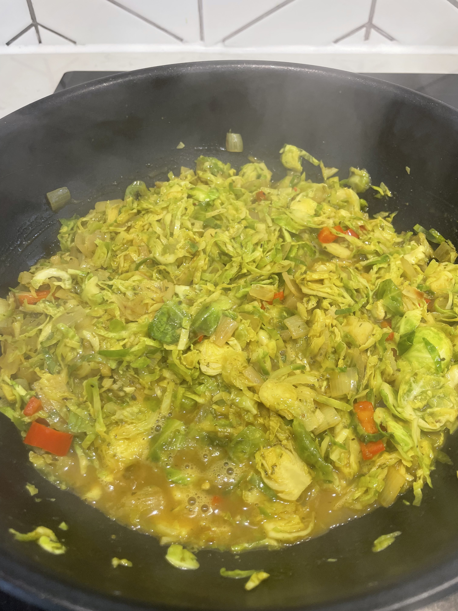

Cabbage Saag Paneer

Description
This recipe can be made with cabbage or sprouts for a tasty curry.
Ingredients
- 350g cabbage OR sprouts (finely sliced)
- 2 tbsp butter/vegan butter
- 40g onion (chopped)
- 2 garlic cloves (grated)
- 1 tsp fresh ginger (grated)
- 200g paneer OR extra firm tofu
- 1 tsp garam masala
- 20g fresh parsley (chopped)
- 1 tbsp lime juice
- 1 chilli (sliced)
- 1 tsp ground tumeric
Steps
- Cut the paneer/tofu into 3cm cubes, then put it in a bowl with chilli, tumeric, olive oil, salt and pepper.
Toss well to coat
- Heat a frying pan over a medium-high heat. When hot, add the paneer/ tofu and cook for 5-6 minutes until
golden all over. Set aside.
- Heat the same frying pan over a medium heat. Add the butter, onion, garlic, ginger, and garam masala. Cook
for 30 seconds, until fragrant, then add the cabbage/sprouts and 200ml of water. Mix and cook for 7-8
minutes until tender.
- Add the paneer/tofu and cook for 203 minutes to heat it through. Sprinkle in the parsley and lime juice.
Toss well and turn off the heat.
- Season to taste and serve warm.
Notes
Home